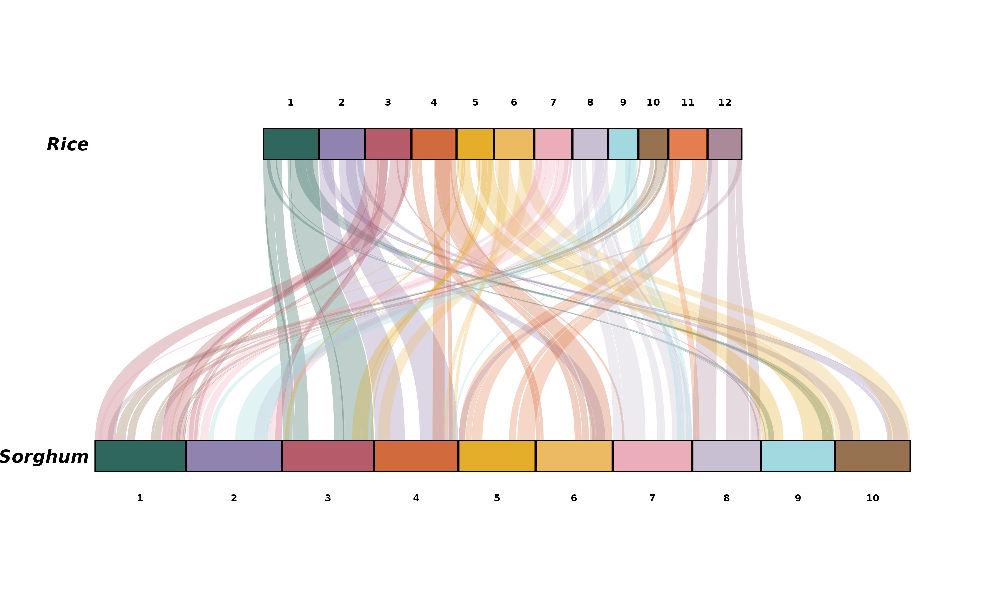
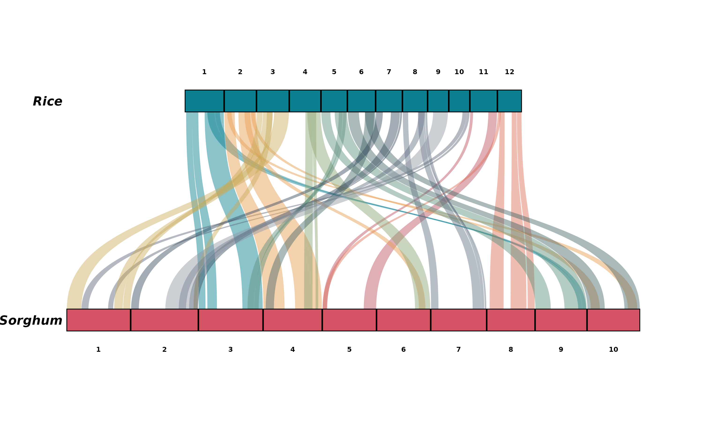
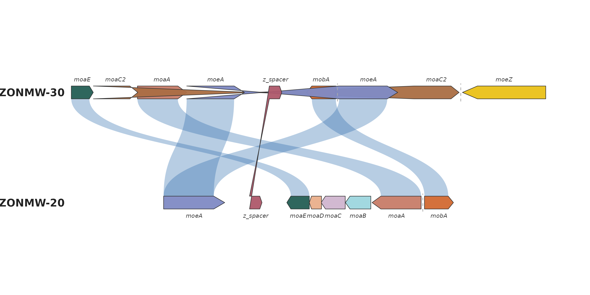
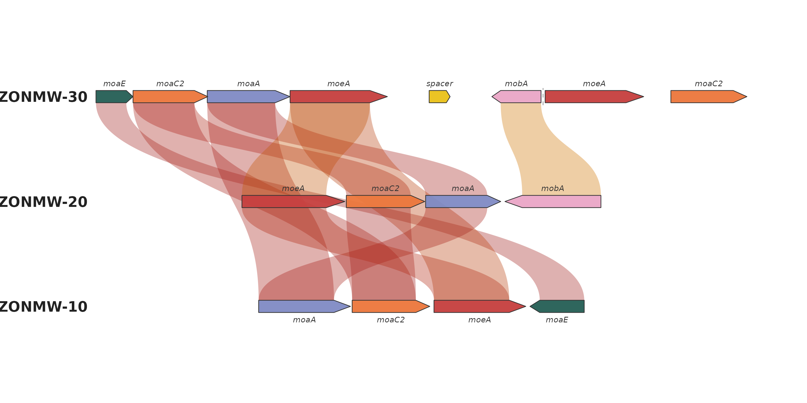

Real data: rice-sorghum and a bacterial gene cluster
Source:vignettes/articles/real-data.Rmd
real-data.RmdThis article works through two real datasets end to end — one macro-synteny (chromosome-level) and one micro-synteny (gene-level) — the way you would use ggsynteny on your own data.
Macro-synteny: rice vs sorghum, from MCScanX output
Rice (Oryza sativa) and sorghum (Sorghum bicolor) diverged roughly 50 million years ago, yet their chromosomes still align over long stretches — the textbook example of grass synteny.
The bundled rice_sorghum dataset is genuine MCScanX
output: the rice-sorghum example data shipped with MCScanX itself
(all-vs-all protein BLAST plus gene positions; Wang et al. 2012,
Nucleic Acids Research 40:e49) was run through MCScanX with
default parameters, and the resulting os_sb.collinearity
file was parsed with ggsynteny’s own read_mcscanx():
syn <- read_mcscanx("os_sb.collinearity", "os_sb.gff")The prepared object keeps the 100 largest inter-genome blocks (at
least 20 collinear gene pairs each) so the default plot stays legible —
data-raw/rice_sorghum.R in the package sources documents
every step:
data(rice_sorghum)
str(rice_sorghum, max.level = 1)
#> List of 2
#> $ chromosomes:'data.frame': 22 obs. of 3 variables:
#> $ blocks :'data.frame': 100 obs. of 10 variables:
head(rice_sorghum$blocks, 3)
#> species1 chr1 start1 end1 species2 chr2 start2 end2 score n_genes
#> 1 Rice 1 22.75 44.95 Sorghum 3 50.83 74.42 77991 1593
#> 2 Rice 1 8.16 15.40 Sorghum 3 10.09 21.19 12422 258
#> 3 Rice 1 19.84 22.30 Sorghum 3 42.09 50.40 1179 27One call plots it. Colouring the ribbons by their rice source chromosome makes the block structure pop — note how rice 1 maps almost entirely to sorghum 3, and rice 11/12 to sorghum 5/8:
plot_synteny(rice_sorghum, c("Rice", "Sorghum"),
palette = "casa_natal",
chr_fill = "per_chr", ribbon_fill = "source_chr")
The blocks data frame keeps MCScanX’s alignment score
and gene count per block, so you can filter harder before plotting:
big <- rice_sorghum
big$blocks <- subset(big$blocks, n_genes >= 100)
plot_synteny(big, c("Rice", "Sorghum"),
palette = "minou", ribbon_alpha = 0.45)
Micro-synteny: a bacterial moa/moe gene cluster
The package also ships a gene-level dataset from a real comparative
analysis: the molybdenum-cofactor (moa/moe) gene cluster across three
bacterial strains, with per-link protein identities. The raw CSVs live
in inst/extdata, so this doubles as a template for loading
your own files:
genes <- read.csv(system.file("extdata", "bacterial_genes.csv",
package = "ggsynteny"))
links <- read.csv(system.file("extdata", "bacterial_links.csv",
package = "ggsynteny"))
head(genes, 3)
#> bin_id seq_id start end strand feat_id name
#> 1 ZONMW-30 4 0 443 + moaE_ZONMW-30 moaE
#> 2 ZONMW-30 4 444 1340 + moaC2_ZONMW-30 moaC2
#> 3 ZONMW-30 4 1333 2325 + moaA_ZONMW-30 moaA
head(links, 3)
#> bin_id feat_id bin_id2 feat_id2
#> 1 ZONMW-30 moaE_ZONMW-30 ZONMW-20 moaE_ZONMW-20
#> 2 ZONMW-30 moaA_ZONMW-30 ZONMW-20 moaA_ZONMW-20
#> 3 ZONMW-30 moeA_ZONMW-30 ZONMW-20 moeA_ZONMW-20The links file pairs feat_ids across strains; rename to
the columns plot_microsynteny() expects:
links <- data.frame(feat_id_a = links$feat_id,
feat_id_b = links$feat_id2)
plot_microsynteny(genes, links,
bin_order = c("ZONMW-30", "ZONMW-20", "ZONMW-10"),
palette = "casa_natal")
Without an identity column the ribbons fall back to a
uniform colour via ribbon_fill = "identity"’s default; with
identities (as in demo_microsynteny_data()) the ribbon
darkness encodes percent identity, and an ordered palette restyles the
ramp:
micro <- demo_microsynteny_data()
plot_microsynteny(micro$features, micro$links,
bin_order = c("ZONMW-30", "ZONMW-20", "ZONMW-10"),
gene_fill = "per_name", gene_palette = "casa_natal",
ribbon_fill = "identity", ribbon_palette = "heatmap0")
References
- Wang, Y. et al. (2012). “MCScanX: a toolkit for detection and evolutionary analysis of gene synteny and collinearity.” Nucleic Acids Research 40(7):e49. doi:10.1093/nar/gkr1293